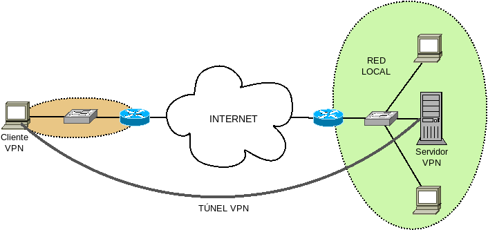
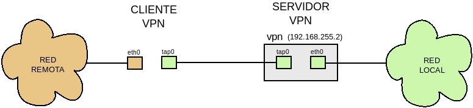

7.4.3.1.2. Conexión sede-equipo móvil¶
Esta conexión se produce cuando se quiere conectar un equipo aislado (el ordenador portátil de un comercial) con la red local al servidor VPN (la empresa, por ejemplo). Los clientes, por supuesto, pueden ser varios pero cada uno de ellos se encontrará en una localización y distinta y las conexiones VPN con el servidor será distintas.
En este caso, la red remota en la que se encuentra el cliente es absolutamente irrelevante mas allá de que debe ser tal que nos permita establecer el túnel.
Desarrollaremos dos casos de estudio: en uno se establece el túnel en capa de red y en el otro en capa de enlace. Para ambos, no obstante, se desrrolla la configuración para que:
La identificación de los clientes sea mediante usuario y contraseña.
Se use como certificado de servidor el generado con Let’s Encrypt.
El cliente pase a conectar a internet a través del túnel VPN.
7.4.3.1.2.1. Capa de red¶
En este caso hay tres redes: la red remota del cliente, la red local al servidor y la red a la que pertenecen las dos interfaces virtuales (una del cliente y otra del servidor) entre las cuales se establece el túnel.
Cuál sea la red remota importa poco, así que establezcamos las otras dos a efectos de aplicar el caso a la configuración:
Red |
Máquina |
||
|---|---|---|---|
Local |
192.168.255.0/24 |
Servidor VPN (eth0) |
192.168.255.2 |
Router Local |
192.168.255.1 |
||
Túnel VPN |
10.8.0.0/24 |
Servidor VPN (tun0) |
- |
Cliente VPN (tun0) |
- |
||
7.4.3.1.2.1.1. Servidor¶
Dispondremos esta configuración:
# /etc/openvpn/server.conf
port 1194
proto udp
dev tun0
# Certificados y claves.
ca certs/ca.crt
cert certs/server.crt
key keys/server.key
dh keys/dh2048.pem
;tls-verify "/usr/share/openvpn/verify-cn /etc/openvpn/allowed-cns"
# Autentificacion con usuario/password
verify-client-cert none
username-as-common-name
tmp-dir "/etc/openvpn/tmp/"
plugin /usr/lib/openvpn/openvpn-plugin-auth-pam.so /etc/pam.d/login
# Configuración de la red del túnel VPN
server 10.8.0.0 255.255.255.0
topology subnet
ifconfig-pool-persist ipp.txt
push "route 192.168.255.0 255.255.255.0 vpn_gateway"
push "dhcp-option DNS 1.1.1.1"
push "dhcp-option DNS 1.0.0.1"
keepalive 10 120
compress lz4
persist-key
persist-tun
status openvpn-status.log
verb 3
cipher AES-128-CBC
tls-auth keys/ta.key 0
user nobody
group nogroup
max-clients 5
;client-to-client
script-security 2
up "/etc/openvpn/bin/masquerade.sh eth0"
plugin /usr/lib/openvpn/openvpn-plugin-down-root.so "/etc/openvpn/bin/masquerade.sh eth0"
Cuya justificación es la siguiente:
Escuchamos en el puerto 1194/UDP
Como establecemos el túnel en capa 3, la interfaz es TUN. Hemos especificado un nombre concreto (tun0), pero podríamos hacer indicado simplemente tun y openvpn se habría encargado de buscar el primer nombre tunX disponible.
Las rutas a los certificados son coherentes con los preparativos que hicimos bajo el epígrafe anterior.
Si usáramos el certificado facilitado por Let’s Encrypt, deberíamos descomentar la línea que verifica con
tls-verify.Añadimos las líneas necesarias para la autenticación de clientes con clave y contraseña. Obsérvese que para la autenticación con PAM usamos el módulo login. Podríamos usar otro personalizado, si entendemos cómo funciona PAM.
Establecemos que actuamos como servidor y definimos cuál es la red (10.8.0.0/24)
Elegimos como topología subnet que se traduce en que se asigna a cada interfaz TUN una sola dirección IP y no dos como hace la topología net30.
Hacemos que los clientes reciban siempre la misma IP.
- Enviamos al cliente alguna información útil para su configuración[1]:
Le instamos a que incluya en su tabla de encaminamiento que para llegar a su red local debe utilizar el túnel.
Le instamos a que cambie la información de los servidores de nombres.
Hacemos ping periódicos entre cliente y servidor para mantener viva la conexión.
Comprimimos la información[2]
Establecemos un nivel de logs más bien bajo (3 cuando el rango va de 0 a 11).
Ciframos con el algoritmo AES-128-CBC.
Tras arrancar el servidor reducimos privilegios.
Permitimos un máximo de cinco clientes conectados y, en caso de no haberse comentado la directiva client-to-client, estaría permitida la comunicación entre los propios clientes.
Por último, establecemos que se ejecute un script tras arrancar y al parar. En el segundo caso, la ejecución debe hacerse de esta manera debido a que redujimos privilegios.
Este script /etc/openvpn/bin/masquerade.sh permite que el cliente
pueda conectarse con la red local (o salir a internet a través del túnel).
Obsérvese que, cuando el cliente intenta comunicar con un dispositivo que se
halla por detrás del servidor VPN los paquetes tendrán como origen su IP
virtual, de manera que una máquina de la red local 192.168.255.0/24 tendrá que
devolver su respuesta a esta IP. Si el servidor VPN es la puerta de enlace
de esta red, no habrá problema; pero, si no lo es, la máquina local no sabrá que
debe entregar al servidor la respuesta para que éste la encamine hacia el
cliente, por lo que la respuesta se perdera. Para evitarlo es necesario que el
servidor enmascare los paquetes a su salida y de eso es de lo que se encarga el
script. Admite como argumentos la lista de interfaces a cuya salida se quiere
enmascarar.
Puede descarse el script del siguiente enlace.
7.4.3.1.2.1.2. Cliente¶
La configuración del cliente depende básicamente de si queremos que éste, además
de establecer el túnel, lo use para salir a internet. Dado que en el cliente,
podemos disponer varias configuraciones de acceso a varios servidores lo más
adecuado es incluir todos los ficheros de una conexión dentro de un mismo
subdirectorio de /etc/openvpn/client. En nuestro caso:
# mkdir /etc/openvpn/client/example
Dentro de él puede incluirse una configuración como ésta:
# /etc/openvpn/client/example/example.conf
client
dev-type tun
dev tun0
topology subnet
<connection>
remote www.example.net 1194 udp
</connection>
resolv-retry infinite
ca client/example/ca.crt
remote-cert-tls server
nobind
persist-key
persist-tun
compress lz4
verb 3
cipher AES-128-CBC
tls-auth client/example/ta.key 1
# Autenticación con usuario/contraseña
auth-user-pass client/example/ident
# Encaminamiento
redirect-gateway autolocal
route 172.16.0.0 255.255.0.0 net_gateway
script-security 2
up /etc/openvpn/update-resolv-conf
down /etc/openvpn/update-resolv-conf
Muchas de las líneas ya está explicadas en la parte del servidor. Pero atiéndase a estas novedades:
Hemos incluido la direciva dev-type para especificar que es una interfaz TUN. Esto ya lo sabe openvpn porque el nombre de la interfaz es tun0. Sin embargo, el cliente no tiene por qué ser obligatoriamente linux y en otros sistemas como windows la interfaz tendrá un nombre más raro cuyo tipo el software no sabrá adivinar. De modo que es bueno especificarlo explícitamente.
La directiva remote especifica cuál es el servidor, puerto de conexión y protocolo. Sólo es obligatorio que la incluyamos dentro de un nodo connection cuando definimos dentro del fichero varias conexiones alternativas. En ese caso, el cliente intentará secuencialmente establecer la conexión según los datos que facilite el remote correspondiente. Un ejemplo de esto, lo veremos al tratar el acceso a redes restringidas.
Intentamos infinitamente la conexión en caso de que falle. Es el comportamiento por defecto, así que podríamos habernos ahorrado la línea.
Declaramos cuál es el fichero donde almacenamos usuario y contraseña. Si deseáramos que estos escribieran interactivamente, podríamos no declarar ningún fichero. También podríamos escribir en el fichero sólo el nombre de usuario y se nos requeriría la contraseña interactivamente.
Las restantes líneas (a partir del comentario «Encaminamiento») posibilitan que el cliente use el túnel para salir de la red:
redirect-gateway es la encargada principal de ello, ya que se ocupa de añadir dos entradas a la tabla de encaminamiento: una para que la puerta de enlace predeterminada sea la IP virtual del servidor, y otra para que la puerta de enlace que se use para acceder a la IP pública del servidor (es decir, la que resuelve www.example.net) siga siendo la puerta de enlace que hubiera antes de establecer el túnel.
El route que añadimos a continuación es sólo una muestra de cómo hacer para seguir accediendo a una red determinada por la puerta de enlace antigua.
El script mencionado con up y down lo proporciona el propio openvpn y permite haciendo uso de resolvconf alterar los servidores de nombres para incluir los que proporciona el servidor VPN. Es probable que si queremos salir a internet por el túnel, también queramos usar los servidores de nombres que el servidor VPN nos sugiera.
Si no quisiéramos usar el túnel para encaminar el tráfico a internet, podríamos prescindir de todas estas últimas líneas.
También es interesante notar lo que no hay en el fichero:
No rebajamos los privilegios como hicimos en el servidor. Esto es debido a que si lo hacemos, al acabar no tendremos permisos suficientes para volver a alterar la tabla de rutas y en consecuencia openvpn no podrá restablecer la puerta de enlace antigua.
El servidor VPN con la directiva push puede conminar al cliente a usar alguna configuración. Sin embargo, el cliente tiene potestad para hacerle caso o no. Para evitar hacerles caso, puede hacerse lo siguiente:
pull-filter ignore "dhcp-option DNS 1.0."es decir la directiva pull-filter, la palabra ignore y una cadena con el comienzo de la directiva que queremos evitar.
El subdirectorio /etc/openvpn/client/example/ deberá contener, además,
otros ficheros necesarios: ca.crt, ta.key y ident o
cliente1.crt y cliente2.key dependiendo de cómo se realice la
autenticación del cliente.
Por otro lado, como debian espera que los ficheros de configuración se
encuentren estrictamente dentro de /etc/openvpn deberemos hacer un
enlace simbólico:
# cd /etc/openvpn
# ln -s client/example/example.conf
Advertencia
Si usa versiones recientes de debian (Buster en adelante) tenga
en cuenta que openssl está configurado para que sólo admita TLSv1.2 o superior, ya que en /etc/ssl/openssl se encuentra esto:
[system_default_sect]
MinProtocol = TLSv1.2
CipherString = DEFAULT@SECLEVEL=2
Si el servidor openvpn es antiguo, es posible que requiera la versión 1.0, por lo que el cliente se negará a efectuar la conexión y fallará el establecimiento del túnel. Si no hay posibilidad de actualizar el servidor, se deberá reducir la versión mínima en el cliente:
MinProtocol = TLSv1.2
7.4.3.1.2.2. Capa de enlace¶
Implementar el túnel en la capa de enlace posibilita que el guerrero de la carretera pertenezca a la propia red local y no a una red diferenciada como ocurría en el caso anterior. A su vez tiene una desventaja: el tráfico aumentará, por lo que la conexión será menos eficiente.
En este caso, se usan interfaces TAP y un esquema adecuado puede ser el siguiente:
O sea, en el lado del servidor se crea una interfaz puente[3] que contenga la interfaz real y la interfaz TAP creada por openvpn: de esta manera la interfaz TAP del cliente pertenece a la red local. Por su parte la interfaz real del cliente pertenecerá a la red remota.
Hay, además, otro aspecto a considerar impropio del caso anterior: cómo obtiene su configuración de red el cliente que, recordemos, deberá ser una configuración que le haga pertenecer a la red local. Aparte de asignarle una IP fija (existe una opción llamada ifconfig para ello), tenemos dos posibilidades:
Que sea el propio servidor VPN el que sirva las direcciones.
Que el servidor DHCP de la red local facilite estas direcciones, lo cual será más adecuado si tal servidor existe.
La diferencia entre una y otra estrategia, además de quién facilita la dirección, es que el servidor VPN se limita a proporcionar IP y máscara y el cliente a configurarla; mientras que en el segundo caso, el cliente debe ejecutar un cliente de dhcp (por ejemplo, dhclient) que recibirá del servidor mucha más información (servidores de nombres, puerta de enlace, etc.).
7.4.3.1.2.2.1. Servidor¶
SI echamos un ojo al esquema dibujado, veremos que el servidor requiere una
interfaz puente que contenga la interfaz real y la interfaz TAP creada por
openvpn. Podríamos, en vista de ello, preparar el servidor para que
exista esta interfaz puente y ya esté dentro de ella la interfaz local[4].
pero, en vez de eso, dejaremos la configuración de red sin tocar[5] y
esperaremos a que el script que se ejecuta al crear el túnel se encargue del
trabajo de constituir el puente necesario. Para ello, planteamos esta
posible configuración, en la que dejamos que el servidor
DHCP que haya en la red local sea el que facilita también a los clientes su
configuración:
# /etc/openvpn/server.conf
port 1194
proto udp
dev tap0
dev-type tap
# Certificados y claves
ca certs/ca.crt
cert certs/server.crt
key keys/server.key
dh keys/dh2048.pem
;tls-verify "/usr/share/openvpn/verify-cn /etc/openvpn/allowed-cns"
# Autentificacion con usuario/password
verify-client-cert none
username-as-common-name
tmp-dir "/etc/openvpn/tmp/"
plugin /usr/lib/openvpn/openvpn-plugin-auth-pam.so /etc/pam.d/login
# Configuración de la red del túnel VPN
server-bridge
keepalive 10 120
compress lz4
persist-key
persist-tun
status openvpn-status.log
verb 3
cipher AES-128-CBC
tls-auth keys/ta.key 0
user nobody
group nogroup
max-clients 5
script-security 2
up "/etc/openvpn/bin/bridge.sh eth0 vpn"
plugin /usr/lib/openvpn/openvpn-plugin-down-root.so "/etc/openvpn/bin/bridge.sh eth0 vpn"
De esta configuración, semejante a la que se realizó para el túnel en capa 3. hay dos aspectos que deben señalarse:
La directiva
server-bridgeprovoca que el servidor VPN no conceda direcciones a los clientes, sino que deje que sea el servidor DHCP de la red local el que lo haga. Por supuesto, si no existiera tal servidor DHCP, podríamos hacer que openvpn se encargara de esa tarea:server-bridge 192.168.255.0 255.255.255.0 192.168.255.250 192.168.255.254 ifconfig-pool-persistent ipp.txt
De la constituición del túnel y toda la configuración que ello supone se encarga el
script bridge.sh, que requiere que le pasemos la interfaz física que se incluirá en el puente y el nombre que le daremos a dicho puente.
7.4.3.1.2.2.2. Cliente¶
Suponiendo que pretendamos que el cliente use el túnel para conectarse a
internet una configuración posible es la
siguiente:
# /etc/openvpn/client/example/example.conf
client
dev-type tap
dev tap0
<connection>
remote www.example.net 1194 udp
</connection>
resolv-retry infinite
ca client/example/ca.crt
remote-cert-tls server
nobind
persist-key
persist-tun
compress lz4
verb 3
cipher AES-128-CBC
tls-auth client/example/ta.key 1
auth-user-pass client/example/ident
# Encaminamiento
route-delay 30
route-gateway dhcp
redirect-gateway autolocal
# Configuración de la interfaz
script-security 2
up /etc/openvpn/bin/dhcp.sh
down /etc/openvpn/bin/dhcp.sh
# Esto confiere una IP fija al cliente y
# podría sustituir a las tres líneas anteriores
#ifconfig 192.168.255.3 255.255.255.0
#route-gateway 192.168.255.1
Antes de comentar la configuración, es indispensable tener presente que, cuando openvpn actúa como dhcp relay del servidor DHCP local, manipula los paquetes de concesión para eliminar de ellos la puerta de enlace (la opción 3 de DHCP), a fin de que el cliente DHCP no modificaque la tabla de encaminamiento. Esto es así, porque openvpn está pensado para que las modificaciones al encaminamiento se definan en el propio fichero de configuración tal como hacemos nosotros:
route-delay 30
route-gateway dhcp
redirect-gateway autolocal
La segunda directiva define como puerta de enlace predeterminada la que haya definido el servidor DHCP y que se extirpó del paquete de concesión. La tercera actúa exactamente igual que como vimos en el caso anterior. La primera pospone la escritura de las entradas 30 segundos, ya veremos por qué.
Además, es preciso ejecutar un cliente que pida la concesión al levantar la interfaz y que pida la revocación al bajarla, por lo que se ha añadido la ejecución del script dhcp.sh:
#!/bin/sh
if [ "$script_type" = "up" ]; then
dhclient -nw $1
else
dhclient -r $1
fi
Advertencia
Esta configuración tiene un pequeño problema en sistemas UNIX: como no es posible utilizar el túnel hasta que no se ha completado su establecimiento (y esto incluye la finalización de dhcp.sh)[6], hay que ejecutar dhclient directamente en segundo plano (con la opción nw) a fin de que el script acabe, se establezca por completo el túnel, y dhclient siga en segundo plano a su aire buscando al servidor DHCP. Como por otro lado hemos fijado que la puerta de enlace es la que nos facilite este servidor, la modificación de la tabla de encaminamiento debe realizarse después de que dhclient haya completado su trabajo. Para ello diferimos 30 segundos la modificación del encaminamiento, aunque este tiempo podremos acortarlo o deberemos alargarlo segun el tiempo que veamos que tarda dhclient en completar su tarea.
Notas al pie